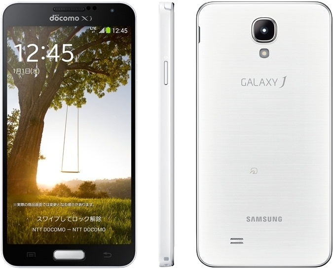

삼성 갤럭시 J
1. 외관

삼성전자가 2013년 10월에 출시한 안드로이드 스마트폰.
2. 사양
| 프로세서 | 퀄컴 스냅드래곤 800 MSM8974 SoC. Qualcomm Krait 400 MP4 2.3 GHz CPU, 퀄컴 Adreno 330 GPU | ||
| 메모리 | 3 GB LPDDR3 SDRAM, 32 GB 내장 메모리, micro SDXC 및 exFAT (최대 64 GB 지원) | ||
| 디스플레이 |
4.99인치 FHD(1920 x 1080) 다이아몬드 형태 RG-BG 펜타일 서브픽셀 방식의 삼성D Full-HD Super AMOLED (441 ppi) 멀티터치 지원 정전식 터치 스크린 with 슈퍼 센서티브 터치, 고릴라 글래스 3 |
||
| 네트워크 | 기본 | LTE Cat.4, HSPA+ 42Mbps, HSDPA & HSUPA & UMTS, GSM & EDGE | Wi-Fi 802.11a/b/g/n/ac, 블루투스 4.0+BLE, NFC/펠리카 |
| - | - | ||
| 카메라 | 전면 200만 화소, 후면 1,300만 화소 AF 및 LED 플래시 | ||
| 배터리 | Li-ion 2600 mAh 착탈식 | ||
| 운영체제 | 안드로이드 4.3 (Jelly Bean) → 4.4 (KitKat) | ||
| 규격 | 70 x 137 x 8.6 mm, 146 g | ||
3. 상세
NTT 도코모가 아이폰 5s와 아이폰 5c를 2013년 겨울 라인업의 선봉으로 세우자 기존 NTT 도코모의 투 톱이었던 삼성전자와 소니 모바일은 NTT 도코모에게 집중했던 것을 완화해 일본 내 타 이동통신사에도 제품을 공급하기 시작했다.
하지만, NTT 도코모와의 관계 역시 악화된 것은 아니기 때문에 삼성전자 일본 법인은 2013년 겨울 라인업에 내수용 모델을 공급하기로 결정했고 결과적으로 갤럭시 J가 기획되었다.
기본적으로는 갤럭시 S4를 따르나 내부 사양은 갤럭시 노트 3 LTE와 비슷하다.
디자인은 갤럭시 S4나 갤럭시 노트 3와는 다르게 독자적인 디자인을 가졌다. 이에 대한 관련 커뮤니티의 반응은 꽤 좋은편. 다만 삼성전자 일본 법인에서 주도한 제품이기에 한국 출시는 되지않을 확률이 높다. 갤럭시 S4나 갤럭시 노트 3의 팀킬 모델이 될 우려가 있기 때문이다.
더군다나 한국에는 갤럭시 S4는 2종이나 출시된 상황이며 갤럭시 노트 3는 S펜과 디스플레이를 맞바꾼 갤럭시 라운드가 출시된 상황이다. 때문에 큰 차이점이 없는 갤럭시 J가 옵티머스 GK처럼 출시되기는 어려울 전망이다.